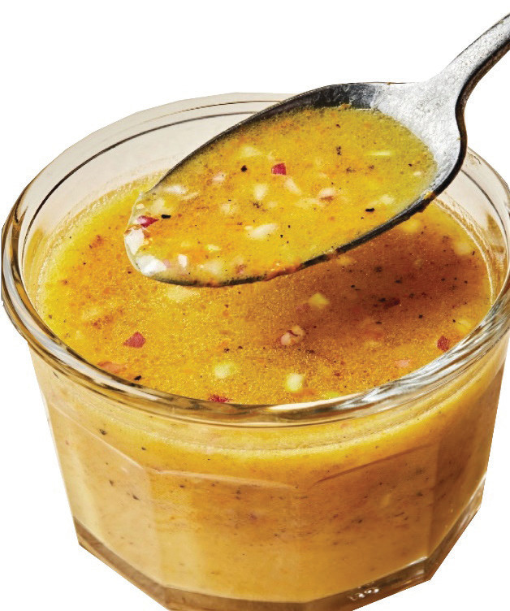

Method
In a bowl, whisk together vinegar, orange juice, chopped onions, honey, mustard powder, olive oil, salt, and pepper until fully emulsified.
Serve accordingly.
Figure 4.27 shows an orange vinaigrette.

Figure 4.27: Orange vinaigretteActivity 4.17
Preparing salad dressing
Follow the methods of preparing lemon mustard salad dressing and orange vinaigrette
(i) Prepare these salad dressing types.
(ii) Explain how you can add more flavour to them.
(iii) Explain how you can thicken a thin salad dressing.
Decorating and garnishing dishes
Food decoration involves adding edible material to a sweet dish to enrich or beautify it.
Food decoration enhances meal presentation, whereas undecorated foods make meals look quite unattractive.
Food decoration process involves topping with icing and jam or designing ornamental decorations such as edible silver balls.
Most decorations require no or little preparation before use.
For example, jam does not require any preparation to decorate a dish such as steamed jam pudding.
Items that can decorate dishes include cherries, sweets, nuts, fruits, sugar, icings, whipping creams, strawberries, and jam.
85